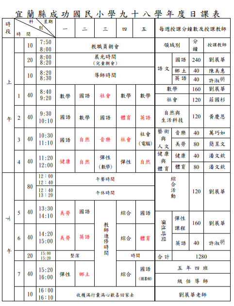

原稿
Table手刻版
| 宜蘭縣成功國民小學九十八學年度日課表 | ||||||||||||
|---|---|---|---|---|---|---|---|---|---|---|---|---|
| 時 段 |
時 間
科 別 星期 |
一 | 二 | 三 | 四 | 五 | 每週授課分鐘數及授課老師 | |||||
| 上 午 |
10 | 7:50 8:00 |
教職員朝會 | 領域別 | 分 鐘 |
授課教師 | ||||||
| 20 | 8:00 8:20 |
晨光時間 (兒童朝會) |
語文 | 國語 | 240 | 劉展華 | ||||||
| 10 | 8:20 8:30 |
導師時間 | 鄉土 | 40 | 陳美惠 | |||||||
| 英語 | 40 | 許淑玬 | ||||||||||
| 1 | 40 | 8:40 9:20 |
數學 | 國語 | 社會 | 數學 | 數學 | 數學 | 160 | 劉展華 | ||
| 社會 | 120 | 莊國衫 | ||||||||||
| 2 | 40 | 9:30 10:10 |
國語 | 數學 | 國語 | 體育 | 英語 | 自然與 生活科技 |
120 | 黃慶恩 | ||
| 3 | 40 | 10:30 11:10 |
國語 | 自然 | 音樂 | 社會 | 社會 (電腦) |
藝術 與 人文 |
音樂 | 40 | 萬巧如 | |
| 美勞 | 80 | 簡昱文 | ||||||||||
| 4 | 40 | 11:20 12:00 |
健康 | 自然 | 彈性 (數學) |
彈性 | 自然 | 健康 與 體育 |
健康 | 40 | 潘文欽 | |
| 體育 | 80 | 潘文欽 | ||||||||||
| 下 午 |
80 | 12:00 12:40 |
午餐時間 | 綜 合 活 動 |
120 | 劉展華 | ||||||
| 12:40 13:20 |
午休時間 | |||||||||||
| 5 | 40 | 13:30 14:10 |
美勞 | 國語 | 教 師 進 修 時 間 |
綜合 | 國語 | |||||
| 彈 性 時 間 |
彈性 課程 |
160 | 劉展華 | |||||||||
| 6 | 40 | 14:20 15:00 |
美勞 | 英語 | 綜合 | 體育 | ||||||
| 英語 | 40 | 許淑玬 | ||||||||||
| 20 | 15:00 15:20 |
整潔 | 時間 | 合計 | 1280 | |||||||
| 7 | 40 | 15:20 16:00 |
彈性 | 鄉土 | 綜合 | 國語 (圖書館) |
五 年 四 班 | |||||
| 級 任 老 師 | ||||||||||||
| 10 | 16:00 16:10 |
收穫滿行囊歡心歡喜回家去 | 劉展華老師 | |||||||||